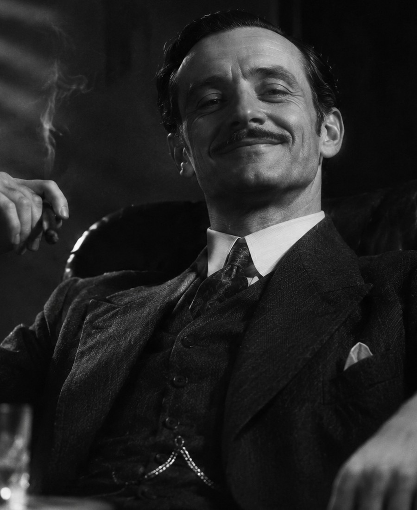

AN UNSOLVED LIVERPOOL MURDER
ПОСЛЕДНИЙ
ХОД
ХОД
ДЕЛО № 031 · 20 ЯНВАРЯ 1931
АРХИВНОЕ РАССЛЕДОВАНИЕ
20 января 1931 года Джулия Уоллес была найдена убитой в собственном доме в Ливерпуле. Накануне неизвестный оставил странное телефонное сообщение. Её муж был осуждён — и освобождён после отмены приговора.
ПУЛЬТ IPHONE · ПОДКЛЮЧЕНИЕ
Отсканируйте QR-код камерой iPhone — пульт следственной группы откроется сразу с кодом этой комнаты. Все материалы и ответ команды выбираются на пульте.
КОМНАТА: —
Все участники — одна следственная группа. Ваша задача — проверить доказательства и вынести обоснованный вердикт. Пульт ТВ: стрелки — выбор, OK — открыть, Return — назад.
ГЛАВА 01
Ночь в Wolverton Street
ХОД РАССЛЕДОВАНИЯ1 / 7
15 MIN
КАРТА РАССЛЕДОВАНИЯ · LIVERPOOL
● МЕСТО · ● СВИДЕТЕЛЬ · ● МАРШРУТ
АРХИВ УЛИК0 документов
ВЕРСИЯ ГРУППЫФормируется
ДЕЛО № 031 · ФИНАЛЬНЫЙ РЕЗУЛЬТАТ
Последний ход
РАССЛЕДОВАНИЕ ЗАВЕРШЕНО

ЭДВАРД МОРТИМЕР
0 / 100